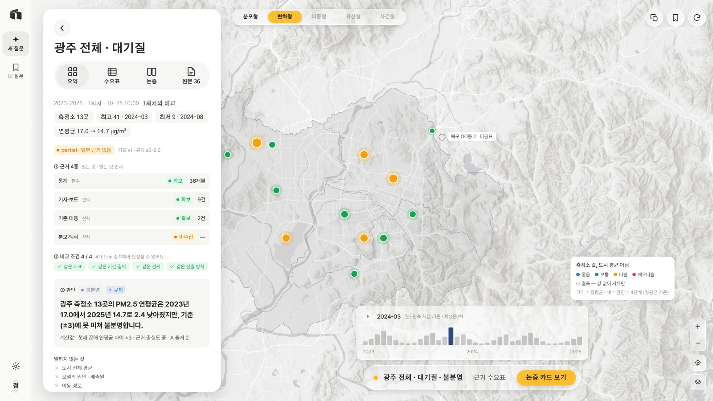
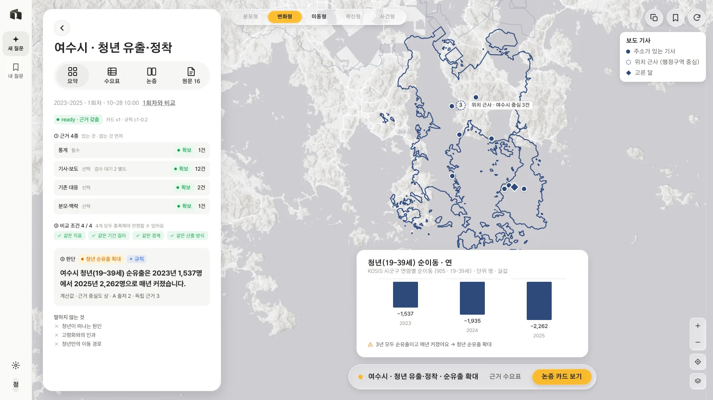
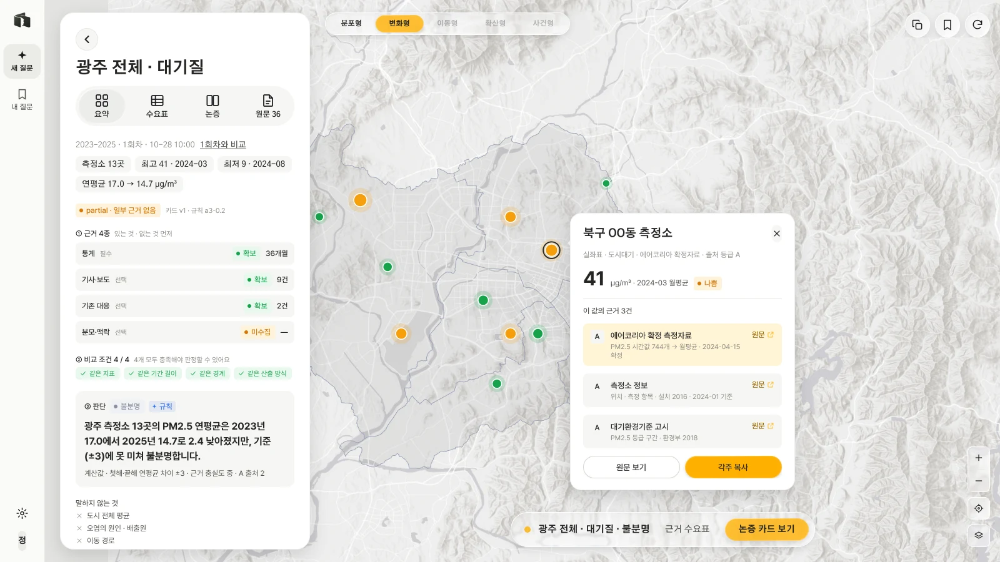

정해진 이름으로 판단해요
확대 · 축소 · 불분명 · 근거 부족 · 비교 불가처럼 카드에 정해 둔 이름으로만 말해요. 같은 자료로 다시 물어도 같은 판단이 나와요.
 로그인
로그인공식 통계 · 보도자료로 연결하는 지역의 맥락
우리 지역이 궁금할 때
근거 수요표부터 논증 카드까지, 질문 하나에 필요한 걸 한 번에 확인하세요



결과가 나오면
판단은 정해진 이름 하나로 끝나요. 근거로 말할 수 없는 건 따로 적어 둬요
확대 · 축소 · 불분명 · 근거 부족 · 비교 불가처럼 카드에 정해 둔 이름으로만 말해요. 같은 자료로 다시 물어도 같은 판단이 나와요.
원인, 정책의 효과, 앞으로의 예측은 판단하지 않아요. 판단 옆에 무엇을 말하지 않는지 함께 보여 줘요.
보고서를 쓸 때
판단의 어느 칸이든 원문까지 이어져 있어요
판단 · 근거 · 반박 어느 칸이든 눌러요
출처 등급 · 시점 · 이용 조건이 함께 보여요
한 번 더 누르면 KOSIS · 보도자료 원문이에요
출처 · 자료명 · 시점 · 조회일까지 그대로